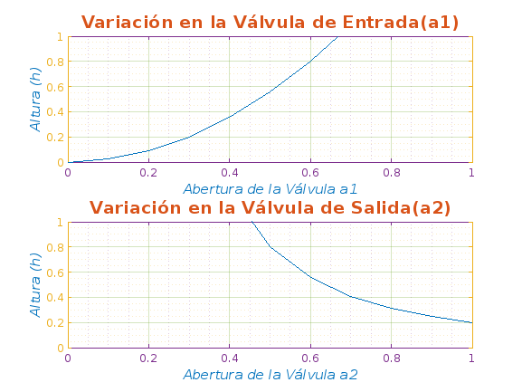
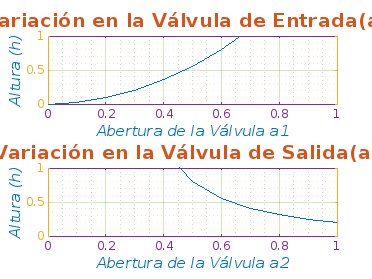
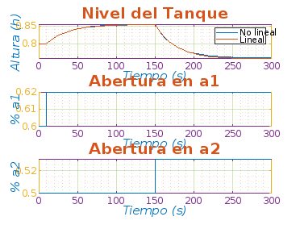

UNIVERSIDAD NACIONAL AUTÓNOMA DE MÉXICO
Contents
- FACULTAD DE ESTUDIOS SUPERIORES ARAGÓN
- DINAMICA DE SISTEMAS FISICOS
- SISTEMA DE PRIMER ORDEN HIDRAULICO
- PROFESOR: GERARDO
- ALUMNOS: ALATRISTE VALENZUELA AGNES PAOLA, BADILLO LOZADA EDUARDO JAVIER
- se limpia todo, esto nos sirve para corridas subsecuentes en el mismo script
- Variables del tanque
- Gráfica no lineal del comportamiento del nivel manipulando la válvula de entrada y dejando la válvula de salida constante y viceversa
- Graficación
- Proceso de simulación
- Graficación de resultados
FACULTAD DE ESTUDIOS SUPERIORES ARAGÓN
DINAMICA DE SISTEMAS FISICOS
SISTEMA DE PRIMER ORDEN HIDRAULICO
PROFESOR: GERARDO
ALUMNOS: ALATRISTE VALENZUELA AGNES PAOLA, BADILLO LOZADA EDUARDO JAVIER
se limpia todo, esto nos sirve para corridas subsecuentes en el mismo script
clc %limpia el texto de la ventana de comandos clear all %limpia todas la variables que se usaran en el código close all % cierra las figuras
Variables del tanque
k1=0.05; %constante 1 k2=0.015; %constante 2 g=10; %gravedad A=0.5; %área del tanque (cilíndrico) %abertura de la válvula de entrada a1=0.0:0.1:1; %se declara la variable a1 como estado inical:incremento:estado final %abertura de la válvula de salida a2=0:0.1:1; %se declara la variable a2 como estado inical:incremento:estado final k=1; %constante A1o=0.6; %Abertura de equilibrio en la válvula de entrada A2o=0.5; %Abertura de equilíbrio en la válvula de salida %Punto de equilibrio del tanque Ho=(k1^2*A1o^2)/(k2^2*A2o^2*2*g); %ecuación encontrada previamente
Gráfica no lineal del comportamiento del nivel manipulando la válvula de entrada y dejando la válvula de salida constante y viceversa
%ciclo for para calcular la altura for i=1:11 %variable i de 1 a 11, con incrementos de 1 hA1(i)=(k1^2*a1(i)^2)/(k2^2*A2o^2*2*g); %se obtiene la altura para cuando varia A1(0:0.1:1) y A2 se mantiene constante en la abertura de equilibrio(A2o) hA2(i)=(k1^2*A1o^2)/(k2^2*a2(i)^2*2*g); %se obtiene la altura para cuando varia A2(0:0.1:1) y A1 se mantiene constante en la abertura de equilibrio(A1o) k=k+1; %se incrementa la constante k en 1 con cada iteración end % fin del ciclo for
Graficación
figure %se crea una ventana de figura t=0:0.1:1; %se declara la variable t cuyo estado inicial es 0 y tendra incrementos de 0.1 hasta 1 %gráfica 1, cuando la válvula de salida se mantiene constante subplot(2,1,1); %divide la figura en cuadricula de m x n y crea ejes en p, recibe (m,n,p) plot(t,hA1) %toma los valores para la grafica de t en el eje x y hA1 en el eje y, el color de la gráfica grid on %se cuadriculan los ejes grid minor %subcuadriculas de los ejes ax = gca; % ejes actuales ax.XColor = "#7E2F8E"; %color del eje x ax.YColor = "#EDB120"; %color del eje y ax.GridColor = "#77AC30"; %color de las cuadriculas principales ax.GridAlpha = 0.3; %transparencia de las cuadriculas axis([0 1 0 1]); %limites del eje siendo [ejeinfx ejesupx ejeinfy ejesupy] title('Variación en la Válvula de Entrada(a1)','FontSize',14,'FontWeight','bold','Color',"#D95319"); %titulo de la gráfica 1 ylabel('Altura (h)','FontSize',11,'FontWeight','normal','FontAngle','italic','Color',"#0072BD"); %etiqueta del eje y en la gráfica 1 xlabel('Abertura de la Válvula a1' ,'FontSize',11,'FontWeight','normal','FontAngle','italic','Color',"#0072BD"); %etiqueta del eje x en la gráfica 1 %gráfica 2, cuando la válvula de entrada de mantiene constante subplot(2,1,2); plot(t,hA2) %toma los valores para la grafica de t en el eje x y hA1 en el eje y grid on %se cuadriculan los ejes grid minor %subcuadriculas de los ejes ax = gca; % ejes actuales ax.XColor = "#7E2F8E"; %color del eje x ax.YColor = "#EDB120"; %color del eje y ax.GridColor = "#77AC30"; %color de las cuadriculas principales ax.GridAlpha = 0.3; %transparencia de las cuadriculas axis([0 1 0 1]); title('Variación en la Válvula de Salida(a2)','FontSize',14,'FontWeight','bold','Color',"#D95319"); %titulo de la gráfica 2 ylabel('Altura (h)','FontSize',11,'FontWeight','normal','FontAngle','italic','Color',"#0072BD"); %etiqueta del eje y en la gráfica 2 xlabel('Abertura de la Válvula a2','FontSize',11,'FontWeight','normal','FontAngle','italic','Color',"#0072BD");%etiqueta del eje x en la gráfica 2
Proceso de simulación
%variables de simulación tsim=300; %tiempo de simulacion tA1=10; %tiempo de variación de a1 tA2=150; %Tiempo dr variación de a2 dA1=0.02; %Variación en valores iniciales de a1 (A1o) dA2=0.03; %Variación en valores iniciales de a2 (A2o) %Simulación sim('tanque'); %se simula el tanque que se maqueto previamente en simulink
Warning: Model '<a href="matlab:open_system ('tanque')">tanque</a>' is using a
default value of 6.0 for maximum step size. You can disable this diagnostic by
setting <a
href="matlab:configset.internal.open('tanque','SolverPrmCheckMsg');">Automatic
solver parameter selection</a> to 'none'
 Graficación de resultados
figure %se crea una ventana de figura % gráfica 1 subplot(3,1,1); %divide la figura en cuadricula de m x n y crea ejes en p, recibe (m,n,p), se trabaja sobre el cuadrante 1 plot(t,rY(:,1),t,rY(:,3)) %toma los valores para la grafica de t en el eje x y hA1 en el eje y grid on %se cuadriculan los ejes grid minor %subcuadriculas de los ejes ax = gca; % ejes actuales ax.XColor = "#7E2F8E"; %color del eje x ax.YColor = "#EDB120"; %color del eje y ax.GridColor = "#77AC30"; %color de las cuadriculas principales ax.GridAlpha = 0.3; %transparencia de las cuadriculas title('Nivel del Tanque','FontSize',14,'FontWeight','bold','Color',"#D95319"); %titulo de la gráfica 1 ylabel('Altura (h)','FontSize',11,'FontWeight','normal','FontAngle','italic','Color',"#0072BD"); %etiqueta del eje y en la gráfica 1 xlabel('Tiempo (s)','FontSize',11,'FontWeight','normal','FontAngle','italic','Color',"#0072BD"); %etiqueta del eje x en la gráfica 1 legend('No lineal','Lineal'); %leyenda de las graficas lineal y no lineal % gráfica 2 subplot(3,1,2); %divide la figura en cuadricula de m x n y crea ejes en p, recibe (m,n,p), se trabaja sobre el cuadrante 2 plot(t,rY(:,2)) %toma los valores para la grafica de t en el eje x y hA1 en el eje y grid on %se cuadriculan los ejes grid minor %subcuadriculas de los ejes ax = gca; % ejes actuales ax.XColor = "#7E2F8E"; %color del eje x ax.YColor = "#EDB120"; %color del eje y ax.GridColor = "#77AC30"; %color de las cuadriculas principales ax.GridAlpha = 0.3; %transparencia de las cuadriculas title('Abertura en a1' ,'FontSize',14,'FontWeight','bold','Color',"#D95319"); %titulo de la gráfica 2 ylabel('% a1','FontSize',11,'FontWeight','normal','FontAngle','italic','Color',"#0072BD"); %etiqueta del eje y en la gráfica 2 xlabel('Tiempo (s)','FontSize',11,'FontWeight','normal','FontAngle','italic','Color',"#0072BD"); %etiqueta del eje x en la gráfica 2 % gráfica 3 subplot(3,1,3); %divide la figura en cuadricula de m x n y crea ejes en p, recibe (m,n,p), se trabaja sobre el cuadrante 3 plot(t,rY(:,4)) %toma los valores para la grafica de t en el eje x y hA1 en el eje y grid on %se cuadriculan los ejes grid minor %subcuadriculas de los ejes ax = gca; % ejes actuales ax.XColor = "#7E2F8E"; %color del eje x ax.YColor = "#EDB120"; %color del eje y ax.GridColor = "#77AC30"; %color de las cuadriculas principales ax.GridAlpha = 0.3; %transparencia de las cuadriculas title('Abertura en a2','FontSize',14,'FontWeight','bold','Color',"#D95319"); %titulo de la gráfica 3 ylabel('% a2','FontSize',11,'FontWeight','normal','FontAngle','italic','Color',"#0072BD"); %etiqueta del eje y en la gráfica 3 xlabel('Tiempo (s)','FontSize',11,'FontWeight','normal','FontAngle','italic','Color',"#0072BD"); %etiqueta del eje x en la gráfica 3 clc %limpia el texto de la ventana de comandos